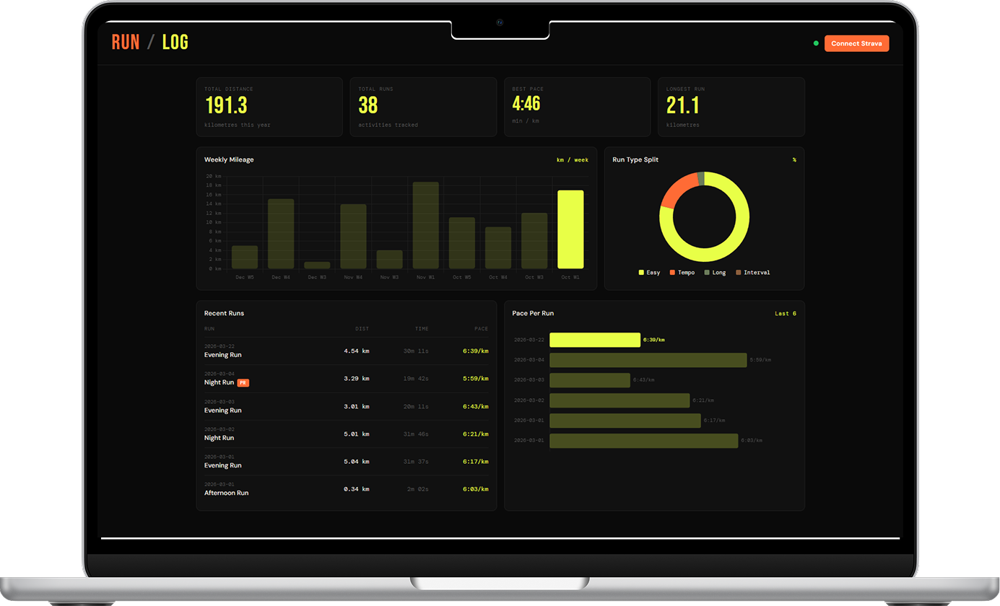

Strava has your data. It is just buried under kudos and leaderboards. RunLog pulls it out and shows you what actually matters for training: weekly mileage, pace, run type balance, personal records. Nothing else.

You log every run. But getting to the actual numbers means
scrolling past social stuff that has nothing to do with your
training. Kudos, segment leaderboards, friend activity.
None of it tells you whether you are ready for your race.
RunLog skips all of that. Connect your Strava account once
and your data is just there every time you open it, pulled
fresh from the API on every page load.
Click "Connect with Strava" and authorize access to your activities. One click, no terminal, no copy-pasting tokens. The OAuth flow handles everything automatically.
Run as normal. Strava records everything via your phone or Apple Watch and syncs automatically when you finish.
Open RunLog on your phone or desktop. Your latest run is already there. No refresh, no export, no manual entry.
Connect your Strava account in one click and see your training data the way it should look.
Connect Strava and Start →